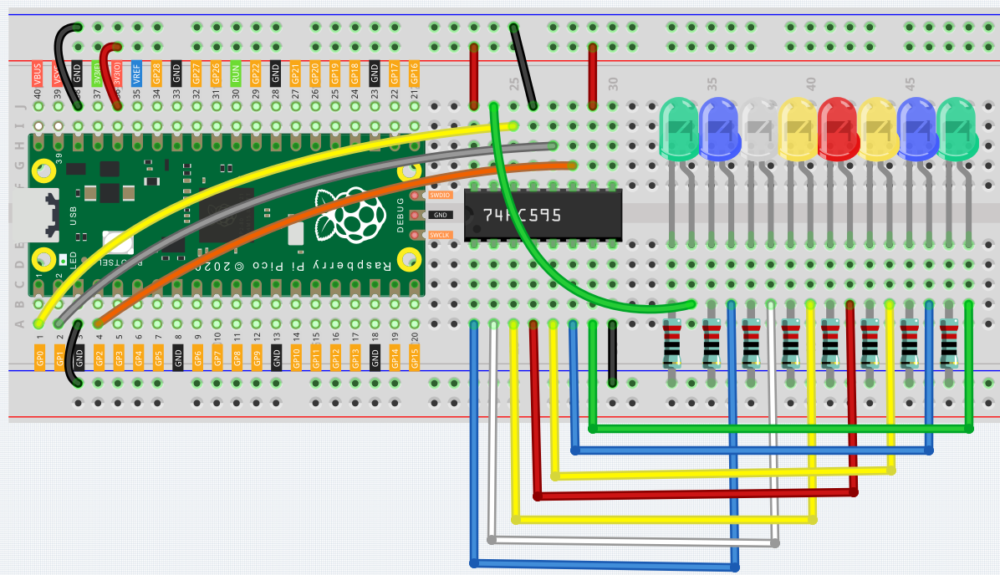

Microchip - 74HC595¶
集成电路（integrated circuit）是一种微型电子器件或部件。采用一定的工艺，把一个电路中所需的晶体管、电阻、电容和电感等元件及布线互连一起，制作在一小块或几小块半导体晶片或介质基片上，然后封装在一个管壳内，成为具有所需电路功能的微型结构；其中所有元件在结构上已组成一个整体，使电子元件向着微小型化、低功耗、智能化和高可靠性方面迈进了一大步。它在电路中用字母“IC”表示。 集成电路发明者为Jack Kilby（基于锗（Ge）的集成电路）和Robert Norton Noyce（基于硅（Si）的集成电路）。
在本套件中配备了一个IC，74HC595，它能够大幅度的节约GPIO引脚的使用。 具体的说，它可以通过写入一个八位二进制数，来取代8个引脚进行数字信号输出。
让我们把它用起来。
Wiring¶
74HC595是一个16pin的IC，在它的一侧（通常是label的左侧）有一个半圆形的槽口。 引脚的排序规则是从槽口开始逆时针数起，换而言之槽口左侧为第一个引脚。 将槽口朝上，其引脚含义如下图所示。

参考下图搭建电路。
将 Pico 的3V3和 GND 连接至面包板的电源总线。
将74HC595跨过中间间隙的插入面包板中。
用跳线连接Pico的GP0引脚与74HC595的DS引脚（14引脚）。
连接Pico的GP1引脚与74HC595的STcp引脚（12引脚）。
连接Pico的GP2引脚与74HC595的SHcp引脚（11引脚）。
将74HC595上的VCC引脚（16引脚）和MR引脚（10引脚）连接至正极电源总线。
将74HC595上的GND引脚（8引脚）和CE引脚（13引脚）连接至负极电源总线。
在面包板上插入8个LED，它们的阳极lead分别连接至74HC595的Q0~Q1引脚（15，1，2，3，4，5，6，7）。
将LED们的阴极lead各自串联一个220Ω电阻器，接入负极电源总线。
Code¶
import machine
import time
sdi = machine.Pin(0,machine.Pin.OUT)
rclk = machine.Pin(1,machine.Pin.OUT)
srclk = machine.Pin(2,machine.Pin.OUT)
def hc595_shift(dat):
rclk.low()
time.sleep_ms(5)
for bit in range(7, -1, -1):
srclk.low()
time.sleep_ms(5)
value = 1 & (dat >> bit)
sdi.value(value)
time.sleep_ms(5)
srclk.high()
time.sleep_ms(5)
time.sleep_ms(5)
rclk.high()
time.sleep_ms(5)
num = 0
for i in range(16):
if i < 8:
num = (num<<1) + 1
elif i>=8:
num = (num & 0b01111111)<<1
hc595_shift(num)
print("{:0>8b}".format(num))
time.sleep_ms(200)
当程序运行时，num会作为一个八位二进制数被写入74HC595芯片，从而控制8盏LED的亮灭。 我们可以在shell中看到num当前的数值。